Setting up the basic API framework (a button that can trigger NASA's API).
Then, I configured two buttons to trigger more NASA APIs.
I encountered an issue where images were not appearing in the desired location,
So next, I started adding styles to the HTML interface for layout and design....
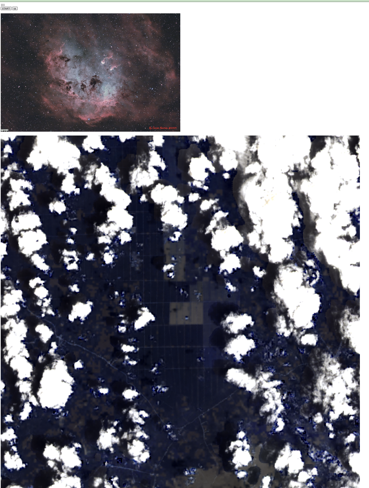I am starting to conceptualize and design my API website.
I want to create a little haven filled with joy and healing. When you feel tired and lost, here you will find healing and guidance.
I have designed four little monsters with googly eyes, each in a different color.
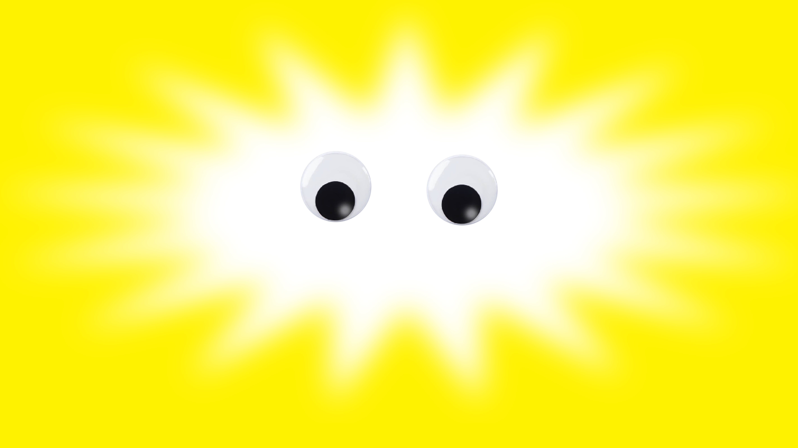 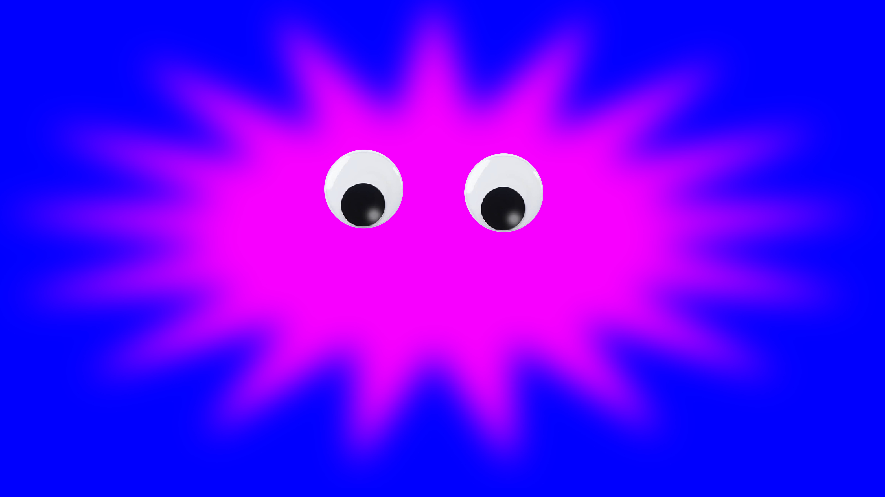 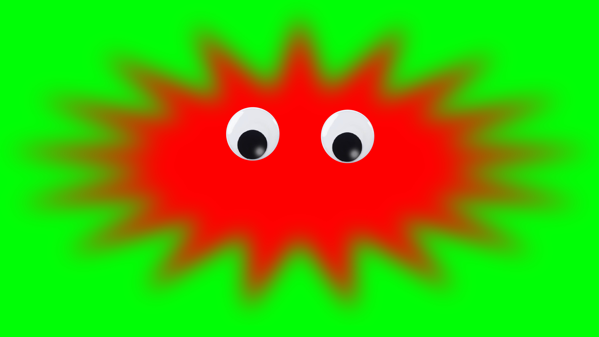 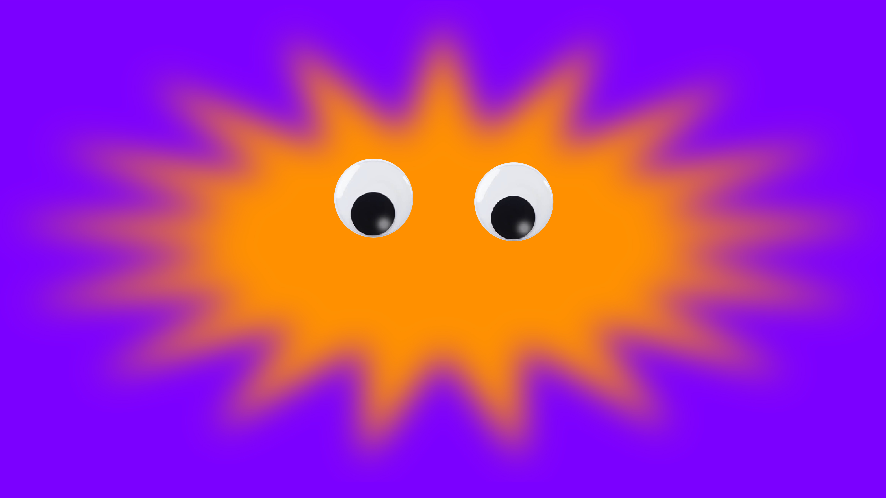I want to create a mechanism for you to interact with the monsters through two buttons.
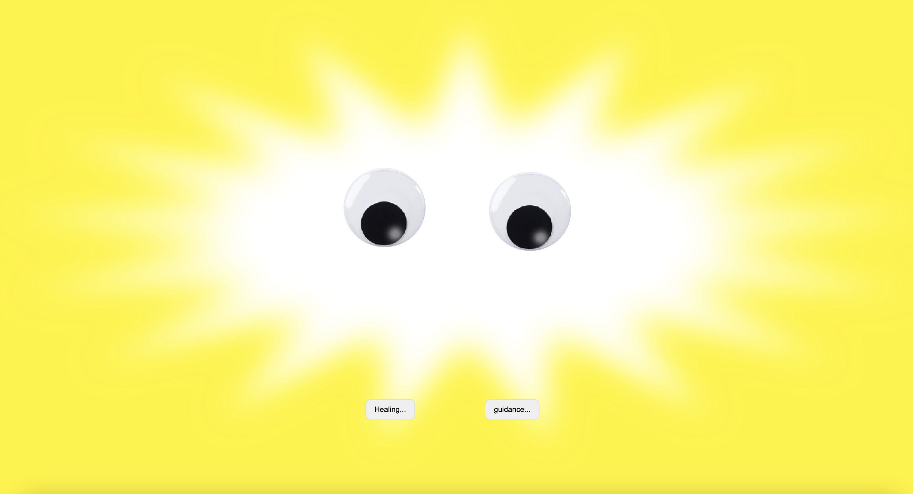These two buttons are for "healing" and "guidance."
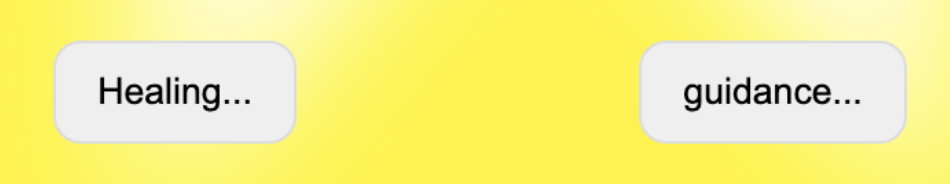In the "healing" section, there are APIs for NASA's Mars overview, emojis, and poetry..
The "guidance" section includes APIs for poetry and the Bible.
I am amazed by the interaction and correlations between different APIs. It seems like fate or the machine is telling you what it wants to say, even if it's random.
This is the final look of the website. Here are some scenarios triggered by the "healing" button.
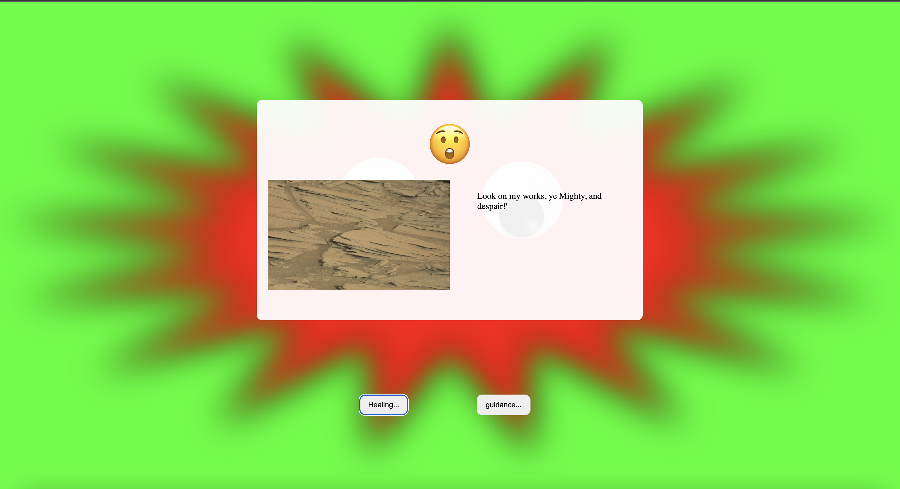 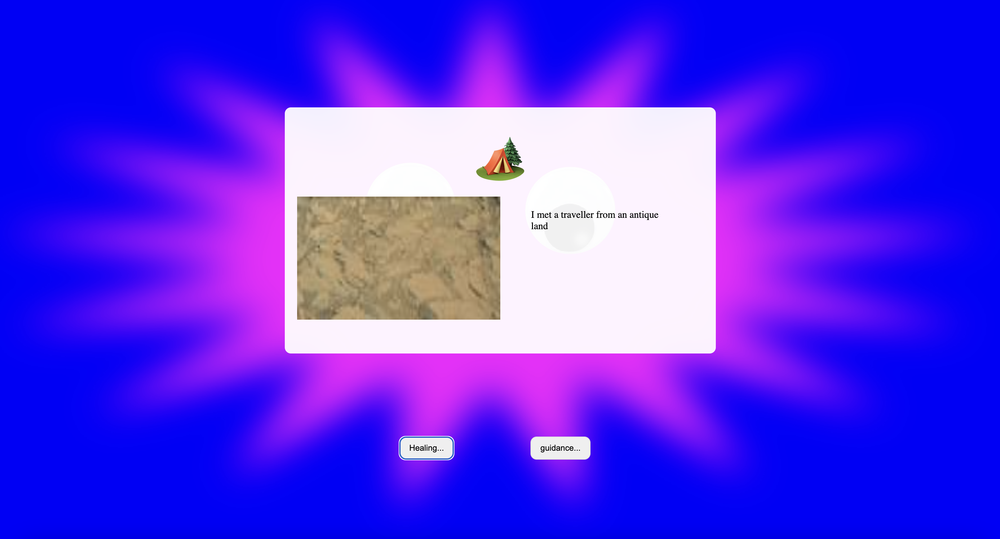
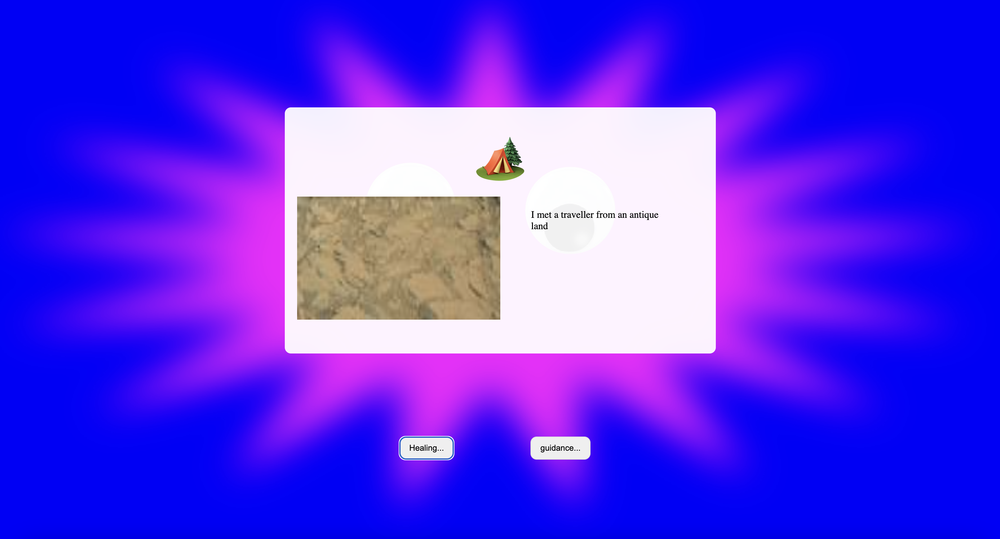
These are the scenarios triggered by the "guidance" button.


 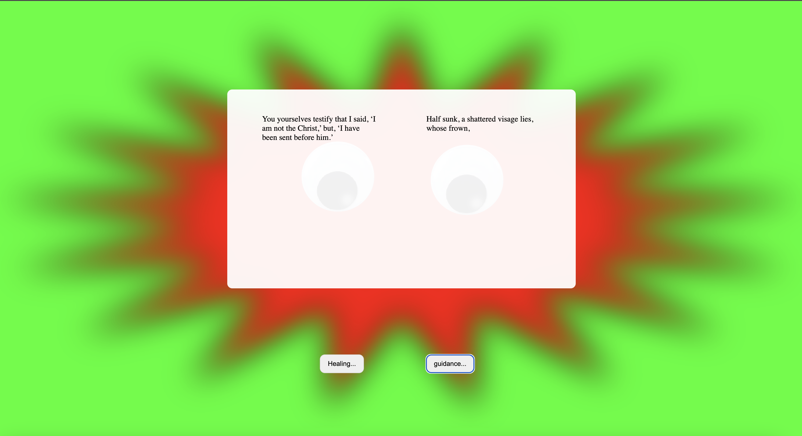
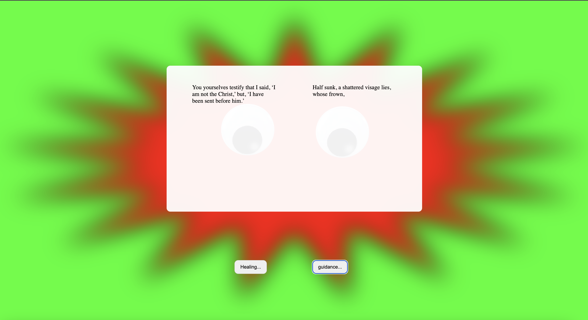